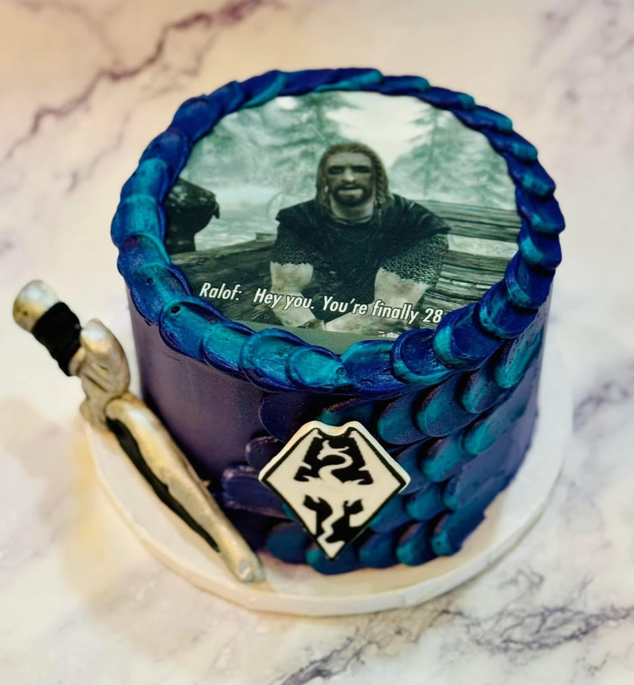

Image Format Showcase
JPG Showcase
Images belonging to the .jpg (Joint Photographic Group) file type are best for photographs and support up to 16.7 million colors.
JPGs are the most common image format.
The image I chose is an JPG of a custom birthday cake with an image of an iconic Skyrim cutscene printed on it.
I decided on this image because Skyrim is one of my favorite games and I enjoy how silly this cake idea is.
This image was located at: Reddit